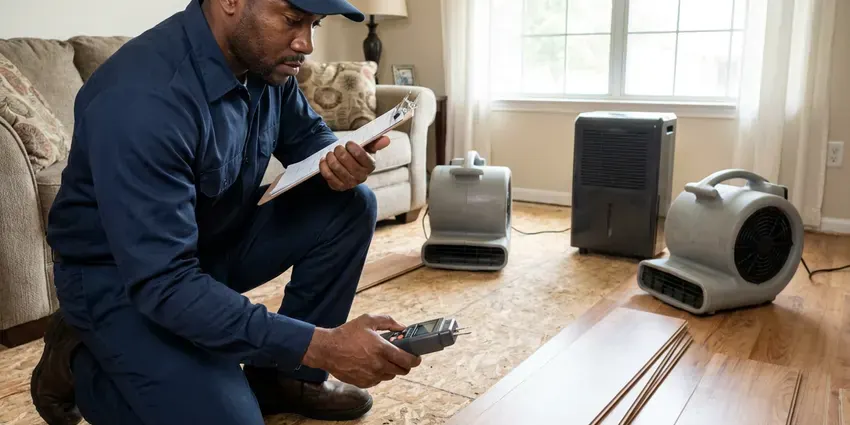

Backflow Preventer in Revere, MA
Annual test notice from your water provider? We test, repair and install backflow preventers in Revere, MA and submit the paperwork.
- Code Compliant Work
- Calibrated Test Gauges
- Same-Visit Retests
- Licensed Backflow Testers

Test Notice in the Mail? Book It in Revere, MA.
Our certified testers bring gauges and rebuild kits, so a failed test rarely means a second visit.
Certified Backflow Preventer Testing and Installation in Revere, MA
BWM Plumbing handles the full backflow compliance cycle, from yearly testing to repairs and new installations. Results from our calibrated test kits go straight to your water provider, which takes the deadline off your plate.
Work we handle every week:
- Calibrated differential pressure gauges
- New backflow installation for irrigation, fire and commercial lines
- Relief valve and check valve repairs

Additional Plumbing Maintenance Services in Revere, MA
Our maintenance and specialty plumbing services in Revere, MA catch small problems before they become emergencies.


Customers
Why Choose BWM Plumbing for Backflow Preventer in Revere, MA?
In Revere, keeping a backflow assembly tested is usually a condition of water service. Plumbers must hold a state license, and most work beyond simple repairs, including water heater swaps, needs a plumbing permit and inspection. We know what the local program asks for. Our testers fill out the provider's form, attach the gauge serial number and calibration date, and submit it so the record is clean.
- Accurate Gauges, Test kits are calibrated every year, so a pass or fail means what it says.
- Same-Visit Repairs, Rebuild kits on our trucks let us fix most failures immediately.
- Certified Testers, Our technicians hold current backflow tester certification and test devices every week.
Citywide Coverage
We test and repair backflow preventers in every neighborhood of Revere, from residential irrigation systems to large commercial properties. Testers know the local reporting rules and use the correct form. No forms get bounced.
Experienced Team
Our backflow testers have years of experience with the assemblies common in Massachusetts. They renew their certification on schedule and keep current on the cross-connection rules and test procedures that water providers follow. Calibration is checked every year.
Safety-First Approach
Drinking water is what this work protects. All our backflow work follows local Revere codes and state regulations, which set the hazard ratings that decide between a double check and an RPZ. The rating matters.
Trusted Certified Revere Plumbing Services Professionals
At BWM Plumbing, we take pride in licensed, certified plumbing services throughout Revere, MA. Credentials matter in this trade. Every repair, install and maintenance visit follows strict safety and quality rules, and the plumbers doing the work carry recognized industry credentials.
Call Us Now PHCC Plumbing Contractor Recognition
PHCC Plumbing Contractor Recognition Better Business Bureau (BBB) Accreditation
Better Business Bureau (BBB) Accreditation Angi Certified Pro
Angi Certified Pro ISO 9001 Quality Management Certification
ISO 9001 Quality Management CertificationBackflow Testing and Repair in Revere, MA
Emergency Backflow Service in Revere, MA
Water running steadily from a backflow assembly is the most common urgent call we get. On a double check or PVB it usually means a cracked bonnet or a failed seal, and on an RPZ it means a check is leaking back. Shut both test valves. BWM Plumbing sends a tester to rebuild or replace it in Revere, MA.

Backflow Preventer Installation in Revere
Domestic water, irrigation and fire lines each have their own rules. We match the assembly to the hazard, with high-hazard lines getting an RPZ and lower hazards usually getting a double check. Then we confirm local Revere code agrees. We give an RPZ space for its discharge and never put one in a pit that can fill with water.
Watts Backflow Preventer Service in Revere, MA
Watts assemblies show up on more jobs than any other brand we see. Common models include the 007 double check, the 009 and LF009 RPZs and the 909 series on bigger commercial services. Kits are widely stocked. Genuine Watts rebuild kits stay on our trucks, so most failures are repaired and retested on the spot.
Backflow Preventer Testing in Revere
Many Massachusetts water providers require a yearly test on every testable assembly. A calibrated gauge goes on the test cocks, and we read the drop across each check and the point where the relief valve opens. Every reading has a pass line. We test RPZ, double check and PVB assemblies and send the report to your water provider.
Reduced Pressure Zone Assembly Service in Revere, MA
RPZ assemblies protect against high-hazard cross-connections at restaurants, medical offices, car washes and buildings with chemical feed. They have two independent check valves with a relief port between them that opens and dumps water if either check starts to fail. Plan a place for the water. RPZs from all the major makers are on our list.
Irrigation Backflow Preventer Installation in Revere
Sprinkler and drip lines sit in soil with fertilizer and pesticides, which makes them a common cross-connection. Systems usually get a PVB mounted a foot above the highest head, or an RPZ when the hazard is higher. Height gets measured, not guessed. Covers and cages guard against weather and theft.
Annual Backflow Testing in Revere
Most water providers require backflow assemblies to be tested at least once a year. We hook up a calibrated differential gauge and measure every check and the relief valve against the required numbers. Results go on the provider's form. Pass, and you are done until next year.

Febco Backflow Preventer Experts in Revere
Febco assemblies are common on irrigation and commercial lines. We work on the 765 pressure vacuum breaker, the 850 double check and the 825Y and 860 reduced pressure assemblies. Each has its own quirks. On a 765, the air inlet poppet and its seat are the usual trouble, and on the 825Y it is often the relief valve diaphragm.
Backflow Preventer Near Me in Revere, MA
Our testers cover Revere and the surrounding towns for backflow work. Homeowners, HOAs and property managers all call us for the same yearly test, and each gets the same calibrated gauge and filed report. Every assembly gets equal attention.
Choosing a local tester for your backflow assembly means one less thing to track in Revere. Your due date stays in our records and we contact you before it, which beats getting the provider's notice first. It saves a scramble.
BWM Plumbing at a Glance
- Fully licensed plumbing team covering Revere, MA
- Same-day appointments and 24/7 emergency response
- Clear written estimates, no hidden fees
- 4.9-star rated by 434+ Massachusetts customers
Revere Map
Revere Information
- Population
- 57,954
- Area codes
- 781/617/978
- Service area
- Revere and communities within 40 miles
- Nearby
- Everett, Malden, Lynn, Boston
Pressure in a city main can drop fast during a main break or a hydrant flush, and that is when a backflow assembly in Revere, MA has to hold.
Expert Services
Reach out to BWM Plumbing for reliable plumbing work done by licensed pros in Revere, MA.
Our Specialized Plumbing Services in Revere, MA
At BWM Plumbing, you get every kind of plumbing service from one company across Revere, MA. From leak detection to full system installs, our team works fast and charges fair prices on homes and commercial properties alike. Explore our core services below:


Our Backflow Preventer Routine in Revere, MA
Here is how BWM Plumbing handles a backflow call in Revere, MA, start to finish.
Call for a Price
Call (857) 335-4894 with your test notice or a description of your assembly. We confirm pricing and schedule a certified tester.
Test the Assembly
We connect calibrated gauges and test every check and relief valve. Results are recorded on your provider's form.
Repair and File
If the assembly fails, we rebuild or replace it and retest. Then we file the passing report with your water provider.
Frequently Asked Questions About Backflow Preventer in Revere
Testing in Revere, MA usually costs between $75 and $150 per assembly. That covers the visit, the test with a calibrated gauge and filing the report with your water provider. Several devices at one address usually get a lower per-unit price because the tester is already set up. Large lines run higher.
Backflow preventers stop contaminated water from flowing backward into the public supply during pressure drops. Irrigation, fire lines and commercial equipment are the most common sources of that contamination, and water providers require assemblies on them to protect public health. Most providers require it.
Yes. Factory warranty covers the parts, and we guarantee the labor. Every repair is retested to confirm it passes before we leave the property.
A standard test usually takes 20 to 45 minutes per assembly. Water is briefly shut off during the test, so we let you know before we close the valve on the supply side. A rebuild adds about an hour.
Constant dripping from the relief valve, low water pressure and visible cracks are the usual signs. Odd-colored water is another sign. Prompt repair keeps you in compliance and keeps the water provider from sending a second notice with a new deadline attached.
Parts and labor on backflow repairs and installs are warrantied by BWM Plumbing. New assemblies also carry the manufacturer's warranty on the valve body and internal parts, which we register for you at no charge. Terms are on your paperwork.
We service reduced pressure zone assemblies, double check valve assemblies, pressure vacuum breakers and atmospheric vacuum breakers. Watts, Wilkins, Febco and Conbraco are the most common, and we also see Apollo and Zurn on commercial work. Common kits ride along.
No, testing and repair have to be done by a certified backflow tester. Plumbers must hold a state license, and most work beyond simple repairs, including water heater swaps, needs a plumbing permit and inspection. Reports from uncertified people get rejected. An incorrect rebuild can leave the water unprotected for a year before the next test catches it.
What Our Customers Say About Our Plumbing Experts

Jessica T.
We were adding a gas range in a kitchen remodel and needed a new line run from the meter. The plumber pulled the permit, ran the pipe through the crawl space, and had it inspected and approved within the week.
Gas Line Repair · Boston, MA
Megan L.
Our upstairs tub drained so slowly that every shower turned into a bath. BWM Plumbing pulled a wad of hair out of the stopper and then snaked the line past the trap. Three months later it still drains fast.
Drain Cleaning · Medford, MAEmily R.
The shutoff valve under our kitchen sink snapped off in my hand on a Sunday morning. BWM Plumbing had someone out by early afternoon. He replaced both angle stops with quarter turn valves and showed me where our main shutoff was, which I honestly did not know.
Plumbing Repair · Somerville, MASofia M.
Two new toilets went in during one visit. The tech set them on new wax rings and swapped the old supply lines. He also noticed our bathroom faucet dripping and replaced the cartridge while he was there. No mess left behind.
Toilet Installation · Lynn, MA
Greg S.
I manage a small strip center with six tenants. BWM Plumbing handles our annual backflow testing and fixed a recurring clog in the shared sewer line that had been backing into the nail salon. Their reports come in clean and on time.
Commercial Plumbing · Somerville, MAMark T.
The floor drain in our office break room backed up every few weeks. The plumber ran a cable, then put a camera down and found roots at a joint about thirty feet out. Seeing it on the screen made the decision easy.
Drain Cleaning · Revere, MA